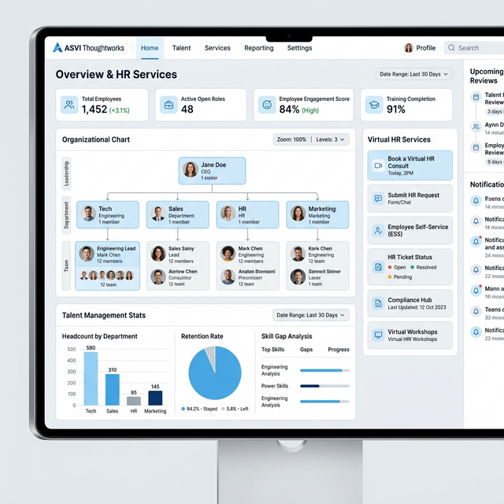
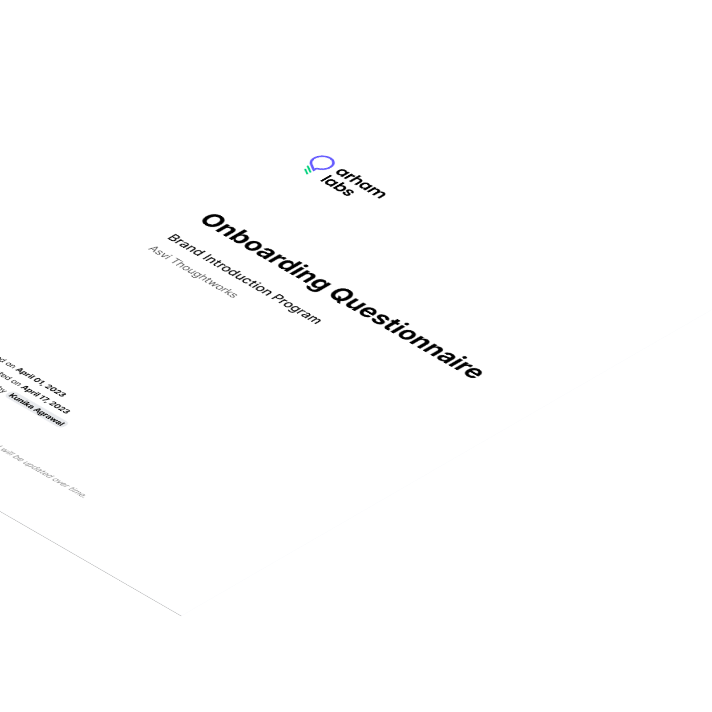
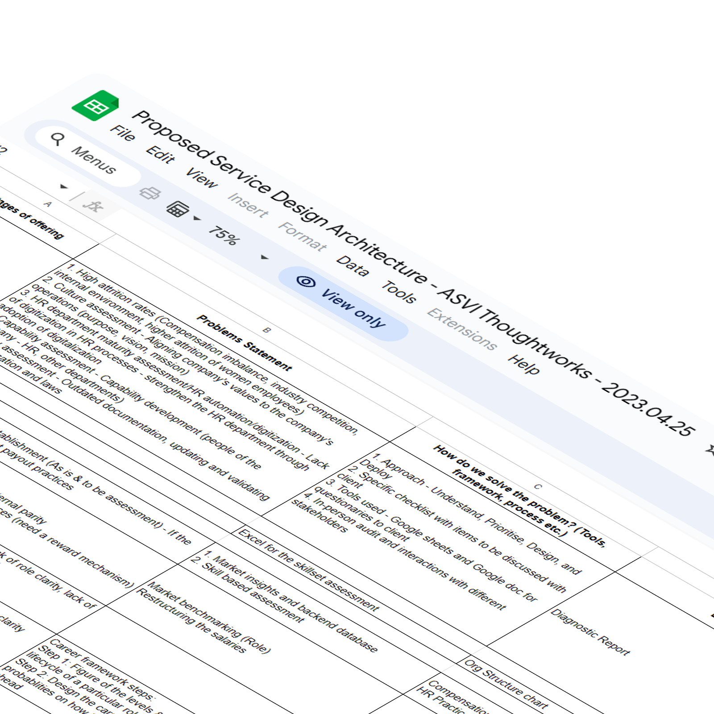
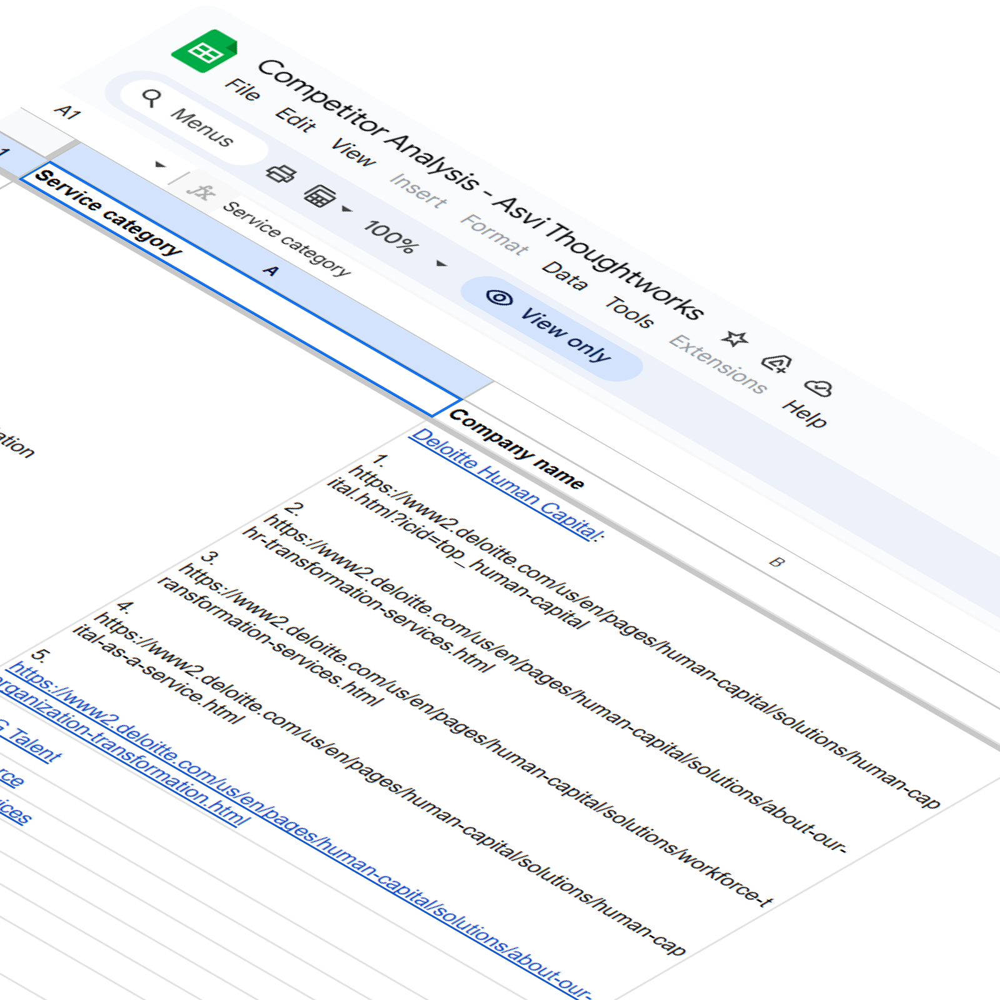
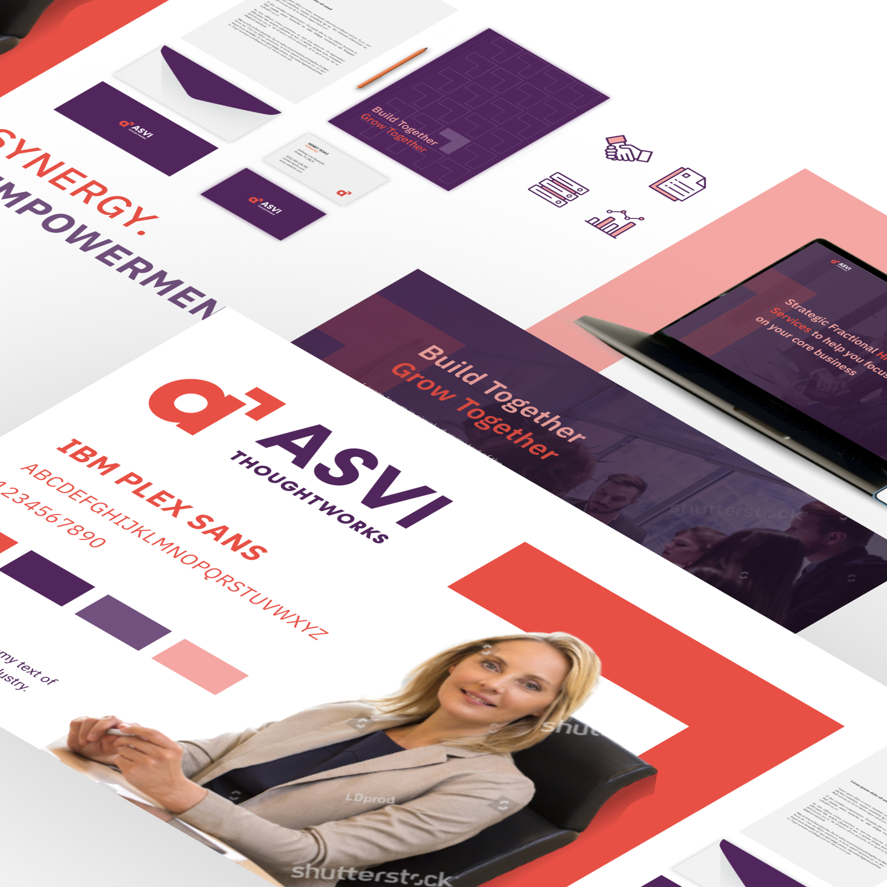
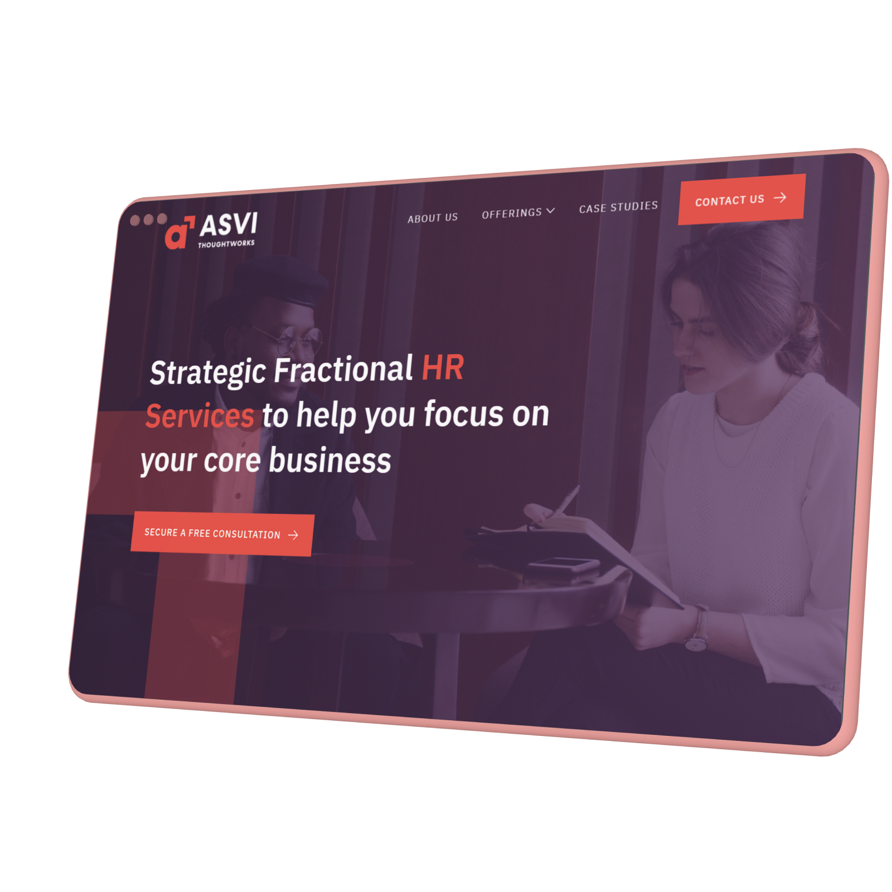
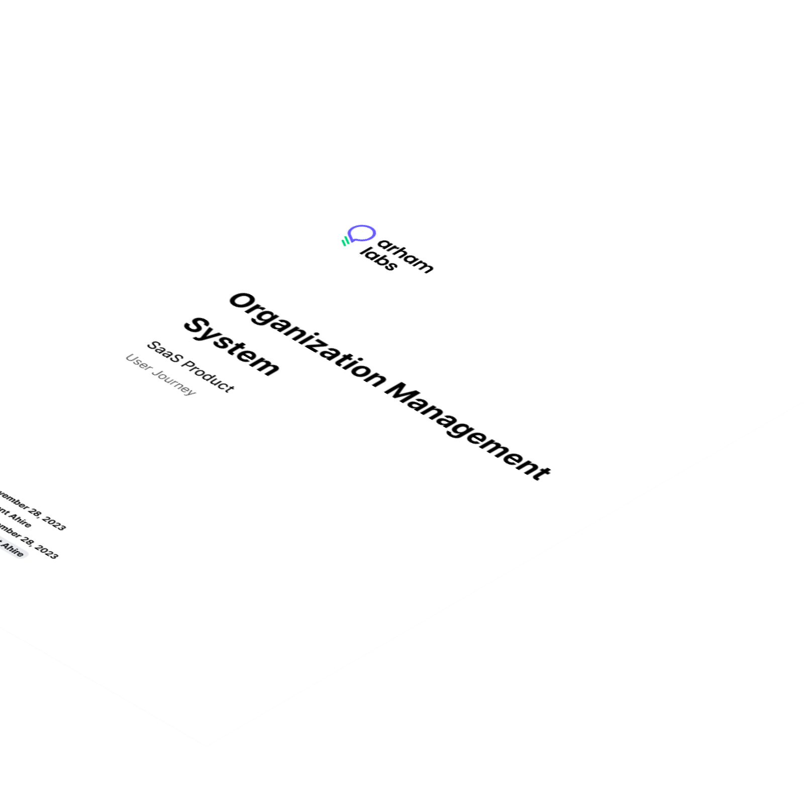
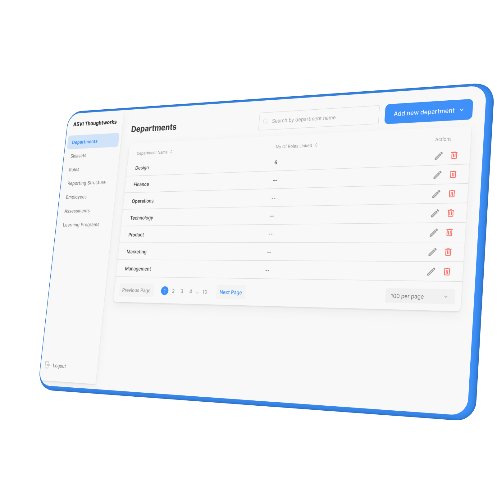
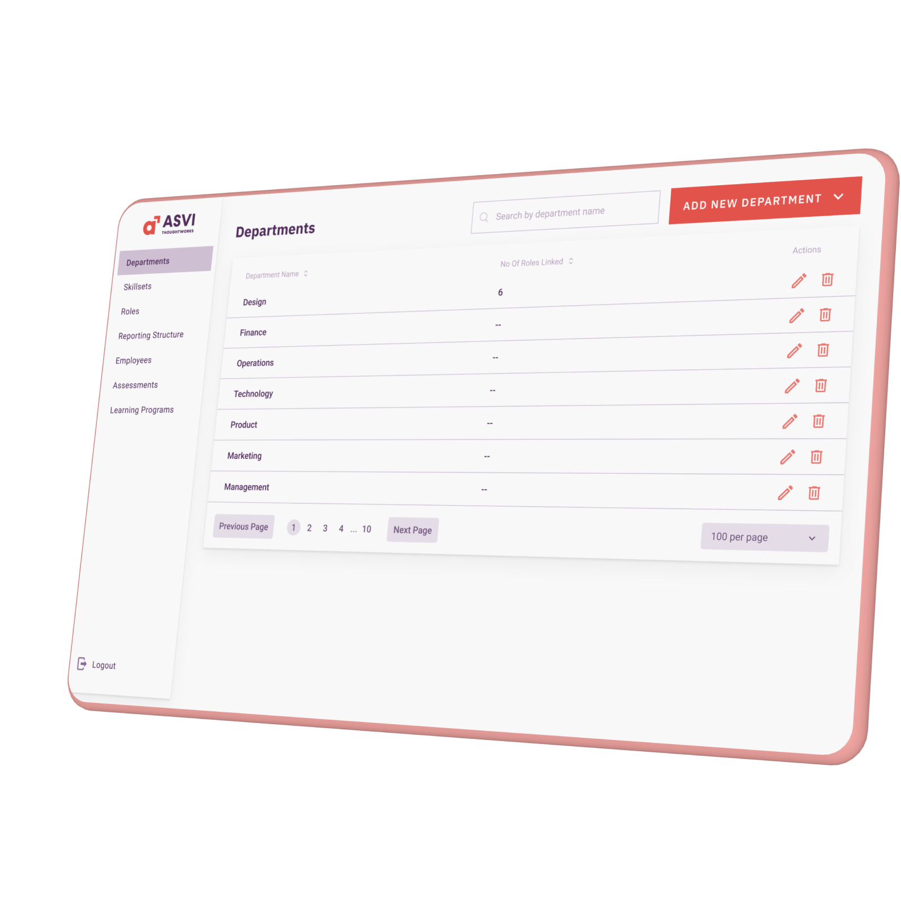

Strategic Fractional HR Services for business.
ASVI Thoughtworks offers integrated HR solutions for large, small and medium-sized enterprises (SMEs) in different industries.

ASVI Thoughtworks offers integrated HR solutions for large, small and medium-sized enterprises (SMEs) in different industries. Their services include Virtual HR, COE Advisory, and Resource Management, aiming to enhance scalability and streamline HR functions for clients.
The team at ASVI Thoughtworks acknowledges the vital role of a robust and enduring workforce in the prosperity of any business. Comprising skilled HR professionals, they are dedicated to providing tailored services to assist clients in attracting, retaining, and nurturing top talent.
Service Design & Digital Maturity
ASVI Thoughtworks is a fractional HR consultancy transitioning from an offline, boutique service into a scalable digital platform. My challenge was not just building a website, but **architecting the service delivery model** that could handle diverse SME industries without manual overhead.
- Implicit knowledge: Extracting HR logic from senior consultants' heads and turning it into digital triggers.
- The Trust Gap: Moving long-term clients from 'calling their consultant' to 'logging into a dashboard' without losing the personal touch.
- Legacy to Logic: Standardizing disparate HR practices (Virtual HR, COE Advisory) into a unified UI framework.
- Brand Credibility: Establishing a digital-first identity that commands as much respect as their 50+ years of collective experience.
I approached this as a Service Design Problem first. We didn't just design buttons; we designed a 'Service Layer' that allows ASVI consultants to manage multiple client organizational trees, skill assessments, and learning programs from a single governed cockpit.
Concept to Launch
1. Branding: Business Immersion
- Conducted deep-dive onboarding questionnaires with stakeholders to extract the firm's 'Implicit Logic' and core value propositions.
- Audited the offline 'Spreadsheet culture' to identify critical pain points for the digital transition.
- Outcome: Established a clear strategic foundation, aligning the boutique identity with functional requirements.

2. Branding: Service Design Architecture
- Mapped the complex service blueprint detailing user triggers, consultant actions, and system data flows.
- Designed a flexible 'Org-Tree' logic capable of supporting diverse corporate hierarchies securely.
- Outcome: Created a robust structural framework bridging the marketing site and the complex internal dashboard.

3. Branding: Secondary Research
- Executed competitive landscape research across consultancy platforms to identify UX gaps and market opportunities.
- Analyzed best-in-class SaaS products to benchmark interaction patterns for high-density data management.
- Outcome: Consolidated actionable insights that informed a differentiated, 'premium' digital positioning strategy.

4. Branding: Visual Identity Design
- Translated the firm's 'high-touch' consulting values into a modern, authoritative digital visual language.
- Developed a scalable typography and color system communicating 'Thought Leadership' and 'Strategic Precision'.
- Outcome: Delivered a cohesive brand identity that positioned ASVI as a tech-forward platform.

5. Branding: Webflow Website Design
- Built the external brand presence on Webflow, ensuring high performance, responsive layouts, and SEO readiness.
- Designed 'Premium Editorial' landing pages to effectively communicate the service architecture to prospective clients.
- Outcome: Successfully launched a high-converting site that establishes brand authority and drives inbound leads.

6. Product Design: Architecture Implementation
- Translated the foundational service design blueprint into actionable user flows for the internal platform.
- Defined the logical relationships between client accounts, skill assessments, and consultant admin controls.
- Outcome: Verified a 'Single Source of Truth' data model that drastically reduced consultant cognitive overload.

7. Product Design: Mid-fidelity Design
- Prototyped the 'Consultant Cockpit'—a centralized dashboard for leads to manage multiple client ecosystems simultaneously.
- User-tested the core Skill Assessment workflow to ensure frictionless navigation and high completion rates.
- Outcome: Streamlined complex data interactions into intuitive, modular dashboard components.

8. Product Design: Brand Integration
- Seamlessly integrated the newly established visual identity system into the platform's Mid-fidelity ecosystem.
- Orchestrated the handoff to engineering teams with clear interaction guidelines and 'Org-Tree' state management logic.
- Outcome: Delivered a cohesive product ecosystem bridging the public-facing brand and internal SaaS tools.

My Role
Product Designer (Branding & UX)
I played an integral role as a collaborator in the branding phase and leader in the product design phase. By understanding business intricacies, conducting thorough research, and ensuring brand consistency, I contributed to a solution that exceeded client expectations.